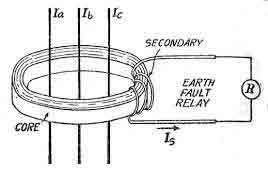

Core balance current transformer or CBCT is a special variation of current transformer, where the main current coil is constructed in ring style. This type of current transformers are specially used for the measurement of three phase current. They are installed in substations in order to protect the line from earth faults. So, an earth fault relay is connected with the CBCT and after sensing the fault current, CT gives the fault signal to the relay. Energised phase cables are inserted through the hollow section of ring coil of CBCT, and automatically the primary of current transformer built, and the air section in between the cable and ring coil acts like the low reluctance flux path. In this way, the ring coil becomes the secondary of the Core balance current transformer. In three phase power system, the current in phase cables are balanced. So, during the normal operation conditions, no current is there in the secondary ring coil of CT. But, when an earth fault is arised, that is any of the phase cable subjected to the direct contact with earth, then huge amount of unbalanced fault current starts flowing through the conductors. When this residual fault current travels through the phase cable, then automatically there will be a considerable current in the secondary coil of CBCT. This fault current signal is received by the relay coil, and automatically trips the contacts. In this way, the line is kept protected from the effect of local earth fault.

 by
by